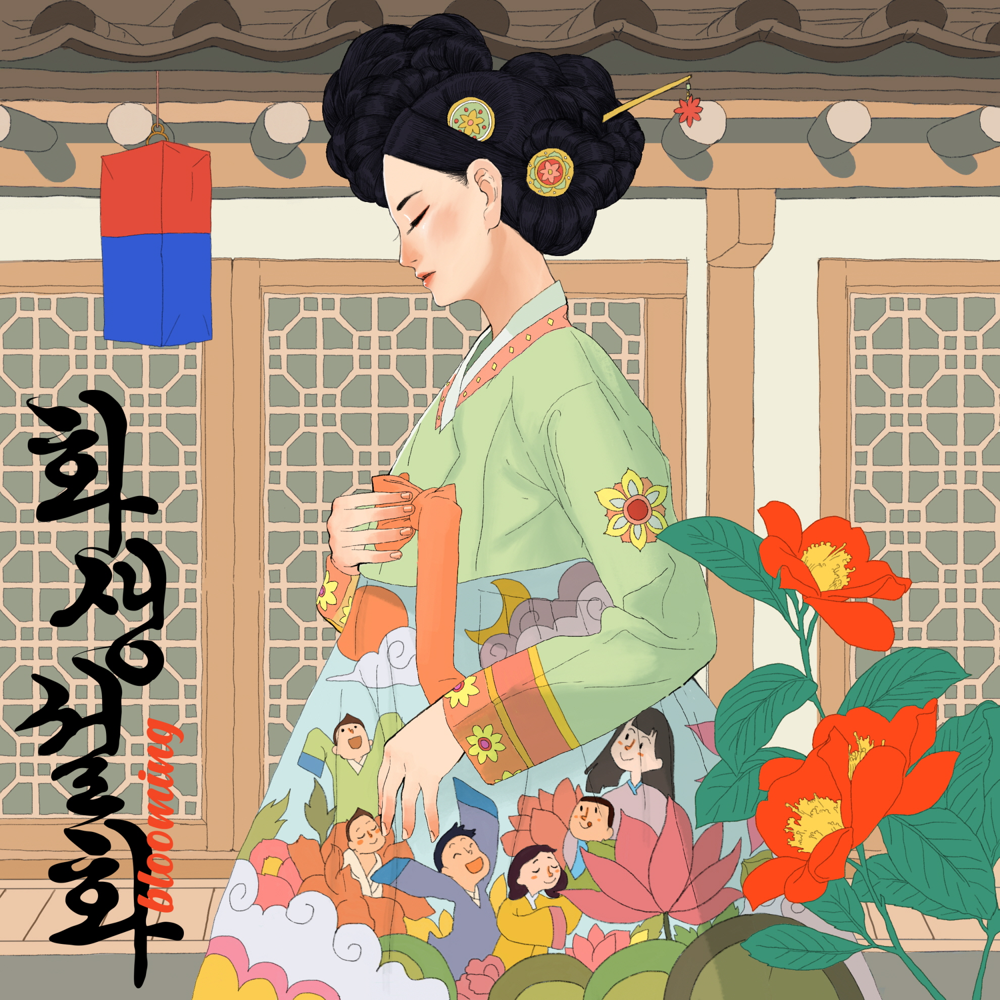

자식을 갖기를 원하는 부부에게 아기를 점지하고, 인간세상의 출산을 돕고, 갓난 아이를 보호하는 삼신.
이 삼신할매의 세계에서 조수로 일하고 있는 주인공, 그녀는 오늘 어떤 일을 하게 될까?
Comment: '비트 포비아'는 공포증을 뜻하는 'phobia'와 극복을 뜻하는 'beat'를 합쳐서 일상에서 느끼는 다양한 공포를 재미있게 깨부실 수 있는 방탈출 카페입니다.
화생설화 테마는 삼신에 대한 서사가 나오는데, 이는 장화와 홍련이 세 번째 부인을 통해 환생한다는 <장화홍련전>과 연결되니 비교해가며 플레이해보면 재미있으실 거예요!